Primal-Dual Hybrid Gradient Algorithm (PDHG)¶
This page introduces the mathematics behind the Primal-Dual Hybrid Gradient Algorithm. For an applied point of view, please see the user’s guide to this method.
The general problem¶
The Primal-Dual Hybrid Gradient Algorithm (PDHG) algorithm, as studied in [CP2011a], is a first order method for non-smooth convex optimization problems with known saddle-point structure
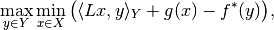
where 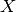 and  are Hilbert spaces with inner product 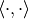 and norm 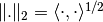,
are Hilbert spaces with inner product 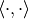 and norm 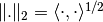,  is a continuous linear operator 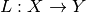, and are proper, convex and lower semi-continuous functionals, and
is a continuous linear operator 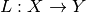, and are proper, convex and lower semi-continuous functionals, and  is the convex (or Fenchel) conjugate of f, (see convex conjugate).
is the convex (or Fenchel) conjugate of f, (see convex conjugate).
The saddle-point problem is a primal-dual formulation of the primal minimization problem
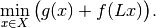
The corresponding dual maximization problem is
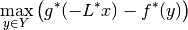
with 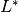 being the adjoint of the operator .
The algorithm¶
PDHG basically consists in alternating a gradient-like ascent in the dual variable  and a gradient-like descent in the primal variable
and a gradient-like descent in the primal variable  .
Additionally, an over-relaxation in the primal variable is performed.
.
Additionally, an over-relaxation in the primal variable is performed.
Initialization¶
Choose 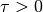, , 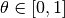, 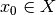, 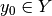, 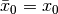
Step sizes¶
A simple choice of step size parameters is 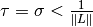, since the requirement 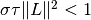 guarantees convergence of the algorithm. Of course, this does not imply that this choice is anywhere near optimal, but it can serve as a good starting point.
Acceleration¶
If  or is uniformly convex, convergence can be accelerated using variable step sizes as follows:
or is uniformly convex, convergence can be accelerated using variable step sizes as follows:
Replace 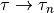, 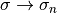, and 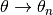 and choose 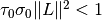 and 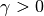. After the update of the primal variable 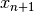 and before the update of the relaxation variable 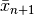 use the following update scheme for relaxation and step size parameters:
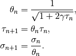
Instead of choosing step size parameters, preconditioning techniques can be employed, see [CP2011b].
In this case the steps  and
and  are replaced by symmetric and positive definite matrices
are replaced by symmetric and positive definite matrices  and
and  , respectively, and convergence holds for 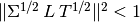.
, respectively, and convergence holds for 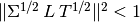.
For more on proximal operators and algorithms see [PB2014]. The implementation of PDHG in ODL is along the lines of [Sid+2012].